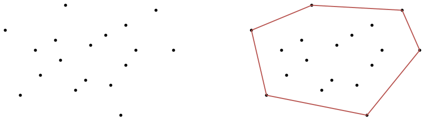
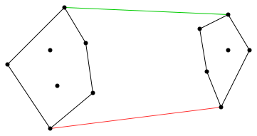
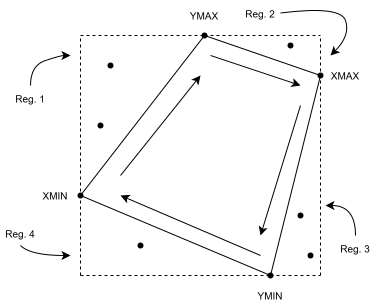
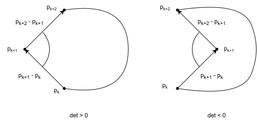

Input: Insieme finito \(S \subseteq \mathbb{R}^2\).
Output: Poligono convesso \(H\) di area minima che contiene tutti i punti di \(S\).
Denotiamo con:
Proprietà: \(P(H) \subseteq S\).
Corollario: \(d \le n\)
Rappresentiamo \(H\) usando una lista ordinata di punti di \(P(H)\):
\[P_1, P_2, P_3, ..., P_d \qquad P_i \in P(H), i = 1, ..., d\]
Tale che:
Nella nostra trattazione assumiamo che l’insieme di punti \(S\) soddisfi le seguenti condizioni:
Non collinearità. Non esistono tre punti di \(S\) che giacciono sulla stessa retta.
Distanza minima. Per ogni coppia di punti \(a,b\in S\), imponiamo \[\Delta X \ge 1 \quad \textrm{e} \quad \Delta Y \ge 1\] dove \[\Delta X = |a_x - b_x| \quad \textrm{e} \quad \Delta Y = |a_y - b_y|\] In tal modo due punti non possono trovarsi “troppo” vicini tra loro.
Il lower bound del problema è \(\Omega(n \hspace{0.25em}log \hspace{0.25em}n)\).
Supponiamo di avere il seguente insieme finito di numeri
\[I = \{ x_1, x_2, x_3, ..., x_n \} \subseteq \mathbb{R} \quad \textrm{dove} \quad x_1 < x_2 < x_3 < ... < x_n\]
Definiamo il seguente insieme
\[S = \{ (x_i, x_i^2) \mid x_i \in I \} \subseteq \mathbb{R}^2\]
Notiamo come i punti di \(S\) giacciono su una parabola. Proprio per questo, è facile vedere che un possibile involucro convesso di \(S\) è dato dalla lista \((x_1, x_1^2), (x_2, x_2^2), ..., (x_n, x_n^2)\).
Se ottenessimo una qualsiasi altra lista, potremmo ottenere quella mostrata sopra in tempo \(O(d)\) e dunque \(O(n)\), trattandosi di una ricerca dell’elemento minimo.
Supponiamo ora, per assurdo, di essere in grado di trovare l’involucro convesso di \(S\) in tempo inferiore a \(O(n \hspace{0.25em}log \hspace{0.25em}n)\).
Se questo fosse il caso, prendendo la prima proiezione della lista \((x_1, x_1^2), (x_2, x_2^2), ..., (x_n, x_n^2)\). otterremo la lista \(x_1, x_2, ..., x_n\). Dunque saremmo in grado di ordinare l’insieme \(I\) in tempo inferiore a \(O(n \hspace{0.25em}log \hspace{0.25em}n)\).
Questo è assurdo perché il lower bound del problema dell’ordinamento è \(\Omega(n \hspace{0.25em}log \hspace{0.25em}n)\). \(\square\)
Come abbiamo già detto, rappresentiamo l’involucro convesso \(H\) usando una lista dei punti di \(P(H)\).
Consideriamo il seguente involucro convesso \(H\):

Possiamo rappresentare \(H\) usando entrambe queste liste:
\[A, B, C \quad \textrm{e} \quad A, C, B\]
Osserviamo come la prima lista elenca i punti di \(H\) in senso antiorario. La seconda lista invece elenca i punti in senso orario 1.
Nella nostra trattazione, per convenzione e per facilitare l’implementazione degli algoritmi, useremo e otterremo sempre liste che elencano i punti dell’involucro convesso in senso orario.
Può accadere di dover controllare se un involucro convesso è espresso in senso orario o antiorario. Per fare questo:
Prendiamo tre punti qualsiasi di \(H\) \(\vec{u}, \vec{v}, \vec{w}\) consecutivi.
Consideriamo i due vettori \(\vec{v} - \vec{u} \hspace{0.5em}\textrm{e} \hspace{0.5em}\vec{w} - \vec{v}\).
Se \(det \begin{pmatrix} \vec{v}_x - \vec{u}_x & \vec{w}_x - \vec{v}_x \\ \vec{v_y} - \vec{u_y} & \vec{w_y} - \vec{v_y} \end{pmatrix} > 0\), allora siamo in senso antiorario.
Se \(det\begin{pmatrix} \vec{v}_x - \vec{u}_x & \vec{w}_x - \vec{v}_x \\ \vec{v_y} - \vec{u_y} & \vec{w_y} - \vec{v_y} \end{pmatrix} < 0\), allora siamo in senso orario.
Se il determinante è uguale a zero allora i tre punti sono collineari. Ricordiamo che, per costruzione, \(S\) non contiene terne di punti collineari.
Se l’involucro è espresso in un senso, per esprimerlo nell’altro bisogna semplicemente invertire l’ordine della lista.
Possiamo osservare che
\[ \begin{aligned} \det\begin{pmatrix} \vec{v}_x - \vec{u}_x & \vec{w}_x - \vec{v}_x \\ \vec{v}_y - \vec{u}_y & \vec{w}_y - \vec{v}_y \end{pmatrix} &= (\vec{v}_x - \vec{u}_x)(\vec{w}_y - \vec{v}_y) - (\vec{v}_y - \vec{u}_y)(\vec{w}_x - \vec{v}_x) && \textrm{Definizione di determinante} \\[8pt] &= (\vec{v}_x - \vec{u}_x)(\vec{w}_y - \vec{v}_y) + (-(\vec{v}_y - \vec{u}_y))(\vec{w}_x - \vec{v}_x) && \textrm{Portiamo dentro il "-"} \\[8pt] &= \begin{bmatrix} -(\vec{v}_y - \vec{u}_y) \\ \vec{v}_x - \vec{u}_x \end{bmatrix} \cdot \begin{bmatrix} \vec{w}_x - \vec{v}_x \\ \vec{w}_y - \vec{v}_y \end{bmatrix} && \textrm{Definizione del dot product} \\[8pt] &= \left\lVert \begin{bmatrix} -(\vec{v}_y - \vec{u}_y) \\ \vec{v}_x - \vec{u}_x \end{bmatrix} \right\rVert \hspace{0.5em} \left\lVert \begin{bmatrix} \vec{w}_x - \vec{v}_x \\ \vec{w}_y - \vec{v}_y \end{bmatrix} \right\rVert \hspace{0.5em} \cos\theta && \textrm{Definizione del dot product} \end{aligned} \]
con \(\theta\) angolo tra \(\begin{bmatrix} -(\vec{v}_y - \vec{u}_y) \\ \vec{v}_x - \vec{u}_x \end{bmatrix} \quad \text{e} \quad \begin{bmatrix} \vec{w}_x - \vec{v}_x \\ \vec{w}_y - \vec{v}_y \end{bmatrix}\).
Notiamo come \(\begin{bmatrix} -(\vec{v}_y - \vec{u}_y) \\ \vec{v}_x - \vec{u}_x \end{bmatrix}\) è perpendicolare a \(\begin{bmatrix} \vec{v}_x - \vec{u}_x \\ \vec{v}_y - \vec{u}_y \end{bmatrix}\) e lo denotiamo con \((\vec{v} - \vec{u})_\perp\).
Vediamo “in azione” il test sull’involucro mostrato sopra, sia per il caso orario che antiorario.


Per ogni coppia di punti \(\vec{u}, \vec{v} \in S\), con \(\vec{u} \neq \vec{v}\):
Consideriamo la retta \(r\) passante per \(\vec{u}\) e \(\vec{v}\).
Questa divide il piano \(\Pi\) in due semipiani, \(\Pi^+ \hspace{0.5em}\textrm{e} \hspace{0.5em}\Pi^-\).
Per ogni punto \(\vec{p} \in S\) con \(\vec{p} \neq \vec{u} \hspace{0.5em}\textrm{e} \hspace{0.5em}\vec{p} \neq \vec{v}\) controlliamo se \(\vec{p}\) cade in \(\Pi^+ \hspace{0.5em}\textrm{o} \hspace{0.5em}\textrm{in} \hspace{0.5em}\Pi^-\).
Se tutti i punti sono caduti esclusivamente in uno dei due semipiani, allora il segmento con estremi \(\vec{u} \hspace{0.5em}\textrm{e} \hspace{0.5em}\vec{v} \hspace{0.25em}\) è un lato dell’involucro convesso.

Come possiamo controllare se un punto \(\vec{p}\) cade in \(\Pi^+ \hspace{0.5em}\textrm{o} \hspace{0.5em}\Pi^-\)?
Supponiamo che il vettore \(\vec{v} - \vec{u}\) è un possibile vettore direzione della retta \(r\).
Dato il vettore \(\vec{v} - \vec{u}\) troviamo un vettore \(\vec{n}\) perpendicolare ad esso.
\(\vec{n}\) è una possibile normale della retta \(r\).
Dato un qualsiasi punto \(\vec{p}\):
Nell’immagine d’esempio \(\vec{n} \cdot (\vec{p} - \vec{u})\) è positivo perché \(0 < \theta < \dfrac{\pi}{2} \hspace{0.5em}\textrm{invece} \hspace{0.5em}\vec{n} \cdot (\vec{q} - \vec{u})\) è negativo perché \(\dfrac{\pi}{2} < \phi < \pi\).

Consideriamo il vettore \(\vec{v} \leftrightarrow \begin{bmatrix} v_x \\ v_y \end{bmatrix}\).
Un vettore \(\vec{u} \leftrightarrow \begin{bmatrix} u_x \\ u_y \end{bmatrix}\) è perpendicolare a \(\vec{v}\) se e solo se \(\vec{u} \cdot \vec{v} = 0\).
Vogliamo determinare \(u_x \hspace{0.5em}\textrm{e} \hspace{0.5em}u_y\), essendo a conoscenza di \(v_x \hspace{0.5em}\textrm{e} \hspace{0.5em}v_y\).
Sappiamo che \(\vec{u} \cdot \vec{v} = 0\) se e solo se \(u_x v_x + u_y v_y = 0\).
Dunque \(u_x = - \dfrac{u_y v_y}{v_x}\)
Fissando \(u_y = v_x\), abbiamo che \(u_x = - \dfrac{v_x v_y}{v_x} = -v_y\).

Sia \(P\) la lista dei punti di \(S\), ordinata in ordine crescente rispetto alla loro componente \(x\).
Dividiamo \(P\) a metà, ottenendo così le liste \(A\) e \(B\).
Applichiamo ricorsivamente l’algoritmo Divide and Conquer su \(A\) e su \(B\), ottenendo così gli involucri convessi \(H_a\) e \(H_b\) rispettivamente, degli insiemi di punti dati dalle liste \(A\) e \(B\).
Fondiamo \(H_a\) e \(H_b\), ottenendo così l’involucro \(H\).
Dati due involucri convessi \(H_a\) e \(H_b\), vogliamo trovare l’involucro convesso \(H\) dell’unione dei vertici di \(H_a\) e \(H_b\).
Possiamo fare questo sfruttando il fatto che:
Per quanto detto sopra, è facile vedere che l’involucro convesso \(H\) risultato dalla fusione di \(H_a\) e \(H_b\) è composto da:
La procedura di fusione si riduce dunque alla ricerca di queste due tangenti, una detta tangente superiore, e l’altra detta tangente inferiore. Per trovarle utilizzeremo il cosiddetto “two fingers method”.
Sia \(r_a\) il punto più a destra di \(H_a\).
Sia \(l_b\) il punto più a sinistra di \(H_b\).
Consideriamo la retta \(r: x = m, \hspace{0.5em}\textrm{dove} \hspace{0.5em}m = \dfrac{(r_a)_x + (l_b)_x}{2}\)
Percorriamo simultaneamente, in modo alternato:
Cercando il segmento di estremi \(p\) e \(q\), con \(p\) vertice di \(H_a\) e \(q\) vertice di \(H_b\), tale per cui la sua intersezione con \(r\) abbia componente \(y\) massima.
Il segmento \(pq\) è la tangente superiore.
Sia \(r_a\) il punto più a destra di \(H_a\).
Sia \(l_b\) il punto più a sinistra di \(H_b\).
Consideriamo la retta \(r: x = m, \hspace{0.5em}\textrm{dove} \hspace{0.5em}m = \dfrac{(r_a)_x + (l_b)_x}{2}\)
Percorriamo simultaneamente, in modo alternato:
Cercando il segmento di estremi \(p\) e \(q\), con \(p\) vertice di \(H_a\) e \(q\) vertice di \(H_b\), tale per cui la sua intersezione con \(r\) abbia componente \(y\) minima.
Il segmento \(pq\) è la tangente inferiore.
Per costruire \(H\), percorriamo:
\(H_a\), partendo dal vertice appartenente alla tangente inferiore fino al vertice appartenente alla tangente superiore, procedendo in senso orario.
\(H_b\), partendo dal vertice appartenente alla tangente superiore fino al vertice appartenente alla tangente inferiore, procedendo in senso orario.
Usando un approccio naive, possiamo cercare una tangente andando ad esaminare tutte le coppie di punti \((p, q) \in P(H_a) \times P(H_b)\) ed usare il two fingers method per trovare la tangente cercata.
Siccome \(\left| P(H_a) \right| \hspace{0.5em}\textrm{e} \hspace{0.5em}\left| P(H_b) \right|\) sono di complessità \(O(n)\), questo metodo naive richiederebbe un tempo \(O(n^2)\).
Tuttavia possiamo fare di meglio se sfruttiamo il fatto che sia \(H_a\) che \(H_b\) sono poligoni convessi.
Percorriamo simultaneamente, in modo alternato, \(H_a\) e \(H_b\). Ad ogni iterazione, confrontiamo tre segmenti:
Se 2. è “migliore” di 1., allora avanziamo il vertice corrente di \(H_b\). Se 3. è migliore di 1., allora avanziamo il vertice corrente di \(H_a\). Altrimenti terminiamo la visita.
Guardando come visitiamo i vertici di \(H_a\) e \(H_b\), vediamo che:
Dunque, per trovare la tangente, ogni vertice di \(H_a\) e \(H_b\) sarà visitato al più un volta.
Dunque, la complessità temporale della ricerca di una tangente è \(O(n)\).
Il processo di fusione consiste in:
Perciò, il processo di fusione ha complessità temporale \(O(n)\).
Possiamo vedere che:
La complessità temporale dell’applicazione ricorsiva dell’algoritmo è espressa dalla seguente relazione di ricorrenza:
\[\begin{align*} T(n) &= 2T\left(\dfrac{n}{2}\right) + n && \textrm{1 espansione} \\[8pt] &= 2\left(2T\left(\dfrac{n}{4}\right) + \dfrac{n}{2}\right) + n \\[8pt] &= 4T\left(\dfrac{n}{4}\right) + 2n && \textrm{2 espansioni} \\[8pt] &= 4\left(2T\left(\dfrac{n}{8}\right) + \dfrac{n}{4}\right) + 2n \\[8pt] &= 8T\left(\dfrac{n}{8}\right) + 3n && \textrm{3 espansioni} \\[8pt] &\quad \vdots \\[8pt] &= 2^k T\left(\dfrac{n}{2^k}\right) + kn && \textrm{k espansioni} \end{align*}\]
Cerchiamo \(k\) tale che \(\dfrac{n}{2^k} = 1\). Dunque \(k = \log_2 n\).
\[\begin{align*} T(n) &= 2^{\log_2 n} T\left(\dfrac{n}{2^{\log_2 n}}\right) + (\log_2 n) n \\[8pt] &= n T\left(\dfrac{n}{n}\right) + n \log_2 n \\[8pt] &= n T(1) + n \log_2 n \end{align*}\]
Per input di taglia 1, Divide and Conquer non esegue operazioni, e dunque possiamo dire che \(T(1) = 1\).
\[\begin{align*} T(n) &= n + n \log_2 n \\[5pt] &= O(n \hspace{0.25em}log \hspace{0.25em}n) \end{align*}\]
Dunque, per quanto detto sopra la complessità temporale complessiva è \(O(n \hspace{0.25em}log \hspace{0.25em}n)\) a causa dell’ordinamento.
L’idea dell’algoritmo di Akl-Toussaint è la seguente:
Determiniamo i seguenti punti di \(S\):
Questi quattro punti appartengono certamente a \(P(H)\). Oltretutto, osserviamo che tutti i punti di \(S\) che cadono all’interno del quadrilatero di vertici \(\textrm{XMIN}\), \(\textrm{YMAX}\), \(\textrm{XMAX}\), \(\textrm{YMIN}\), sicuramente non fanno parte di \(P(H)\).
Dunque possiamo eliminare tali punti da \(S\).

Osserviamo, sul disegno qui sopra, come ad ogni lato del quadrilatero corrisponde una regione. Quello che facciamo è percorrere il quadrilatero in senso orario e, per ogni regione, cercare il percorso convesso che ci porta da un estremo all’altro del lato corrispondente la suddetta regione.
Una volta che abbiamo determinato i vari percorsi convessi per le relative regioni, andiamo a unirli seguendo il senso orario di percorrenza dei lati del quadrilatero. Dalla loro unione risulta \(H\).
Sia \(R\) l’insieme di punti che cadono nella regione (compresi gli estremi del lato corrispondenti alla regione).
Se siamo nella regione 1, o nella regione 2, ordiniamo i punti di \(R\) in ordine crescente di \(x\), ottenendo così una lista di punti \(P\).
Se siamo nella regione 3, o nella regione 4, ordiniamo i punti di \(R\) in ordine decrescente di \(x\), ottenendo così una lista di punti \(P\).
Per ogni tripla di punti consecutivi \((P_k, P_{k+1}, P_{k+2})\) in \(P\):
Calcoliamo \(det \begin{pmatrix} (P_{k+2} - P_{k+1})_x & (P_{k+1} - P_{k})_x \\ (P_{k+2} - P_{k+1})_y & (P_{k+1} - P_{k})_y \end{pmatrix}\)
Se tale determinante è:
Maggiore o uguale a 0, passiamo alla successiva tripla \((P_{k+1}, P_{k+2}, P_{k+3})\) di punti consecutivi in \(P\).
Minore di 0, eliminiamo il punto \(P_{k+1}\) dalla lista \(P\) e passiamo alla tripla \((P_{k-1}, P_k, P_{k+2})\) di punti consecutivi in \(P\).
Se abbiamo completato (1) senza avere rimosso nessun punto di \(P\), allora ci fermiamo, altrimenti ripetiamo (1).
Quando ci fermeremo, la lista \(P\) sarà proprio la lista di punti, in senso orario, del lato del poligono convesso che stavamo cercando.

Ordinamento dei punti della regione \(\rightarrow O(n \hspace{0.25em}log \hspace{0.25em}n)\)
Convessificazione \(\rightarrow O(n)\)
Il processo di convessificazione di \(P\) è una scansione di \(P\), nella quale possiamo procedere effettuando sia passi in avanti (andando alla tripla di punti successiva) che passi indietro (andando alla tripla di punti precedente).
Un modo per determinare la complessità temporale della scansione è quello di contare il numero di passi da essa effettuati.
Siccome in \(P\) vi sono al più \(n\) punti, il numero di passi in avanti che possiamo fare è \(\le n\).
Ogniqualvolta esaminiamo una tripla di punti consecutivi in \(P\), c’è la possibilità di effettuare un passo indietro. Osserviamo come, quando effettuiamo un passo indietro, andiamo anche a rimuovere un punto da \(P\). Siccome in \(P\) vi sono al più \(n\) punti, il numero totale di passi indietro che possiamo fare è \(\le n\).
In conclusione, il numero totale di passi che possiamo fare è \(\le n + n\), ovvero \(\le 2n\).
Dunque, la complessità della ricerca del percorso convesso è \(O(n \hspace{0.25em}log \hspace{0.25em}n)\).
Per costruire \(H\) è sufficiente unire i percorsi convessi trovati \(\rightarrow O(n)\)
Di conseguenza, la complessità temporale complessiva è \(O(n \hspace{0.25em}log \hspace{0.25em}n)\).
A grandi linee TORCH:
Ordiniamo i punti di \(S\) in ordine crescente di \(x\), ottenendo una lista di punti \(P\).

Siano:
Troviamo i quattro percorsi seguenti, detti “involucri laterali”:
Costruiamo \(H'\) concatenando \(\Pi_{nw}, \Pi_{ne}, \Pi_{sw} \hspace{0.5em}\textrm{e} \hspace{0.5em}\Pi_{se}\) in modo appropriato.
Costruiamo \(\Pi_{nw}\) nel modo seguente:
Possiamo osservare che, alla fine della sua costruzione, \(\Pi_{nw}\) avrà la struttura seguente:
\[\Pi_{nw} : W = p_0, p_1, p_2, ..., p_{k_{nw}} = N\]
dove
Costruiamo \(\Pi_{ne}\) in modo molto simile a come abbiamo costruito \(\Pi_{nw}\). L’unica differenza è che partiamo da \(E\), invece che da \(W\), e che facciamo la scansione di \(P\) da \(E\) a \(N\), invece che da \(W\) a \(N\).
Possiamo osservare che alla fine della sua costruzione, \(\Pi_{ne}\) avrà la struttura seguente:
\[\Pi_{ne} : E = p_0, p_1, p_2, ..., p_{k_{ne}} = N\]
dove
Costruiamo \(\Pi_{sw}\) nel modo seguente:
Possiamo osservare che, alla fine della sua costruzione, \(\Pi_{sw}\) avrà la struttura seguente:
\[\Pi_{sw} : W = p_0, p_1, p_2, ..., p_{k_{sw}} = S\]
dove
Costruiamo \(\Pi_{se}\) in modo molto simile a come abbiamo costruito \(\Pi_{sw}\). L’unica differenza è che partiamo da \(E\), invece che da \(W\), e che facciamo la scansione di \(P\) da \(E\) a \(S\), invece che da \(W\) a \(S\).
Possiamo osservare che alla fine della sua costruzione, \(\Pi_{se}\) avrà la struttura seguente:
\[\Pi_{se} : E = p_0, p_1, p_2, ..., p_{k_{se}} = S\]
dove
Costruiamo \(H'\) nel modo seguente:
Possiamo notare come, per costruzione di \(H'\) si ha che \(P(H) \subseteq P(H')\). In particolare, \(H'\) contiene già tutti i punti di \(H\), possibilmente assieme ad alcuni punti aggiuntivi che rendono \(H'\) concavo. Convessificare \(H'\) significa dunque rimuovere quei punti di \(H'\) che lo rendono concavo.
Per convessificare \(H'\) possiamo usare lo stesso procedimento che abbiamo presentato durante la trattazione di Akl-Toussaint, in merito alla ricerca di un percorso convesso.
Facciamo notare come in questo caso non è necessario ordinare \(H'\), siccome, per costruzione questo è già nell’ordine desiderato.
Ordinamento di S \(\rightarrow O(n \hspace{0.25em}log \hspace{0.25em}n)\)
Costruzione di \(H'\) \(\rightarrow O(n)\)
Ricerca di \(W\) e \(E\) \(\rightarrow O(1)\)
Ricerca di \(N\) e \(S\) \(\rightarrow O(n)\)
Costruzione di \(\Pi_{nw}\) \(\rightarrow O(n)\)
Costruzione di \(\Pi_{ne}\) \(\rightarrow O(n)\)
Costruzione di \(\Pi_{sw}\) \(\rightarrow O(n)\)
Costruzione di \(\Pi_{se}\) \(\rightarrow O(n)\)
Concatenazione di \(\Pi_{nw}, \Pi_{ne}, \Pi_{sw}, \Pi_{se} \rightarrow O(n)\)
Convessificazione \(\rightarrow O(n)\)
Dunque, la complessità temporale dell’algoritmo è \(O(n \hspace{0.25em}log \hspace{0.25em}n)\).
Un algoritmo di approssimazione, al contrario dei classici algoritmi che più comunemente si studiano, non da garanzie di trovare la soluzione corretta, bensì ne trova una che, in generale, sarà “abbastanza buona”.
Con “abbastanza buona” si intende che la distanza tra la soluzione approssimata e quella corretta è minore di un dato valore di soglia. La funzione distanza tra le due soluzioni, di norma, emerge naturalmente dalla natura del problema trattato, e dalle sue soluzioni.
Usiamo un algoritmo di approssimazione quando per noi non è strettamente necessario trovare la soluzione esatta.
Ha senso pratico usare un algoritmo di approssimazione solo nel caso in cui il suo tempo di esecuzione sia inferiore al tempo di esecuzione di un qualsiasi algoritmo esatto per il problema. Se questo non fosse il caso, potremmo direttamente trovare la soluzione esatta in un tempo inferiore rispetto a quella approssimata.
Presentiamo ora uno schema generale per la definizione di algoritmi di approssimazione per il problema dell’involucro convesso:
Sia:
Dunque, è chiaro che la complessità temporale di un qualsiasi algoritmo di approssimazione che usa lo schema presentato sopra è:
\[T_{s'}(n) + T(m)\]
L’aspetto più interessante dello schema generale per la definizione di algoritmi di approssimazione per l’involucro convesso è la determinazione di \(S'\). Vi sono innumerevoli strategie che possiamo usare per determinare \(S'\). Quella che presenteremo è stata proposta da Bentley, Faust e Preparata nel 1988.
Consideriamo i quattro punti seguenti di \(S\):
Poniamo \(S' = \{ \textrm{XMIN}, \textrm{XMAX}, \textrm{YMIN}, \textrm{YMAX} \}\). È chiaro che \(H'\) è il quadrilatero convesso \(Q\) di vertici \(\textrm{XMIN}, \textrm{XMAX}, \textrm{YMIN}, \textrm{YMAX}\).
Per ogni punto \(p \in S\), se \(p\) cade al di fuori del quadrilatero \(Q\) allora la distanza tra \(p\) e \(Q\) è al più \(\Delta X\), dove \(\Delta X = \textrm{XMAX}_x - \textrm{XMIN}_x\).
Sia \(R\) il rettangolo con diagonale il segmento di estremi \((\textrm{XMIN}_x, \textrm{YMIN}_y)\) e \((\textrm{XMAX}_x, \textrm{YMAX}_y)\).
È facile vedere che tutti i punti \(p \in S\) cadono all’interno di \(R\).
Un qualsiasi punto \(p \in S\) che cade al di fuori del quadrilatero deve essere in una delle quattro regioni \(A, B, C \hspace{0.25em}o \hspace{0.25em}D\) sotto riportate.

Prendiamo, senza perdita di generalità, un generico punto \(p \in S\) che cade nella regione \(A\). Naturalmente, la distanza \(\delta\) tra \(p\) e \(Q\) è data dalla distanza tra \(p\) e il segmento \(\textrm{XMIN}, \textrm{YMAX}\).
Denotiamo con \(\delta x\), la lunghezza del segmento con estremi:

È facile osservare come \(\delta \le \delta x \le \Delta X\). \(\square\)
Possiamo immaginare di aver determinato \(S'\) nel modo seguente:
Aggiungiamo a \(S'\) il punto \(\textrm{XMIN}\).
Aggiungiamo a \(S'\) il punto \(\textrm{XMAX}\).
Consideriamo l’intervallo \([\textrm{XMIN}_x, \textrm{XMAX}_x]\). Questo può essere visto come una striscia verticale sul piano. Tutti i punti di \(S\) cadono all’interno di questa striscia. Cerchiamo i due punti della striscia con \(y\) minima e \(y\) massima e li aggiungiamo a \(S'\).
Possiamo estendere la costruzione esposta sopra ad un generico numero \(k\) di strisce di larghezza uniforme:
Aggiungiamo a \(S'\) il punto \(\textrm{XMIN}\).
Aggiungiamo a \(S'\) il punto \(\textrm{XMAX}\).
Consideriamo l’intervallo \([\textrm{XMIN}_x, \textrm{XMAX}_x]\) e lo partizioniamo in \(k\) sotto intervalli (strisce), ognuno di ampiezza \(\dfrac{\Delta X}{k}\).
Per ogni sotto intervallo (striscia), cerchiamo, tra i punti di \(S\) che cadono nella striscia, i due che hanno \(y\) minima e \(y\) massima, e li aggiungiamo a \(S'\).
Osservazione: Possiamo osservare che, per costruzione di \(S'\) si ha che \(P(H') \subseteq P(H)\).
Per ogni punto \(p \in S\), se \(p\) cade al di fuori di \(H'\) 2 allora la distanza tra \(p\) e \(H'\) è al più \(\dfrac{\Delta X}{k}\).

Consideriamo un qualsiasi punto \(p \in S\) che cade al di fuori di \(H'\). Per costruzione, \(p\) deve cadere all’interno di una data striscia.
Siccome \(p\) cade al di fuori di \(H'\), \(p\) non è stato preso dal campionamento, e dunque \(p\) non può né avere \(y\) minima né \(y\) massima nella striscia in cui cade. Dunque, \(p_y\) deve essere compreso tra questi due valori, esclusi. Perciò, nella striscia in cui cade \(p\), devono cadere almeno altri due punti. Oltretutto, almeno un punto \(h\) tra questi due deve appartenere a \(P(H')\). Dunque, la distanza \(\delta\) tra \(p\) e \(H'\) è data dalla distanza di \(p\) da uno dei due lati di \(H' \cap \{ \textrm{striscia} \}\), quella che ha \(h\) come uno dei due estremi.
Denotiamo con \(\delta x\) la lunghezza del segmento che ha come estremi:

Possiamo vedere che \(\delta \le \delta x \le \dfrac{\Delta X}{k}\). \(\square\)
Per ogni punto \(p \in S\), se \(p\) cade al di fuori di \(H'\) allora la distanza tra \(p\) e \(H'\) è al più \(\dfrac{D}{k}\), dove \(D\) è il diametro di \(S\). Il diametro è definito come la massima distanza tra due generici punti di \(S\).
Per definizione di \(D\), \(\Delta X \le D\). Questo assieme a quanto dimostrato precedentemente è sufficiente a provare il corollario. \(\square\)
Dunque, la complessità dell’algoritmo è \(O(n)\).